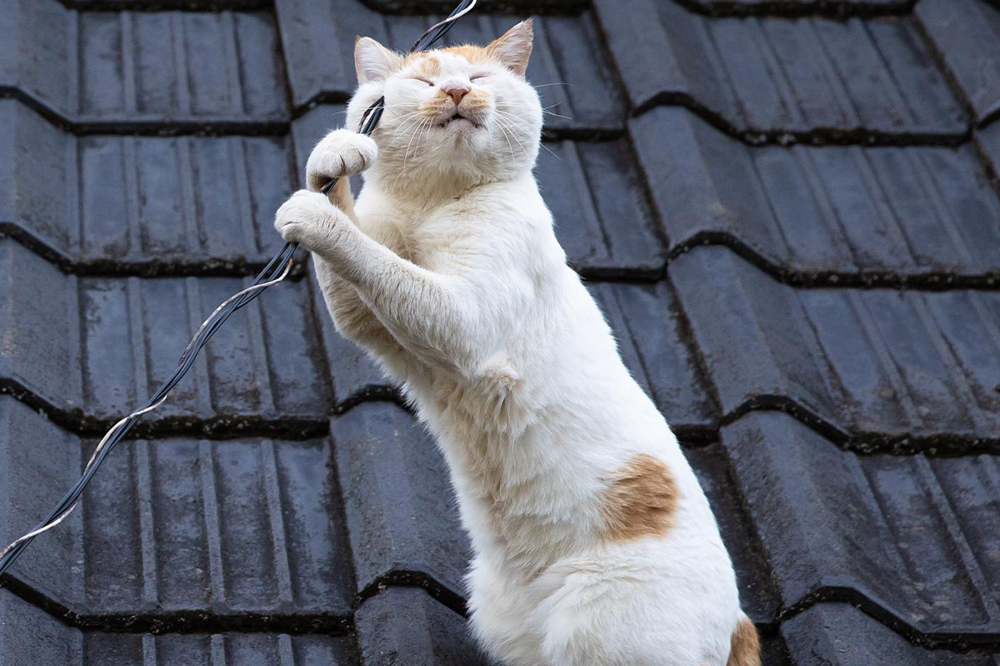
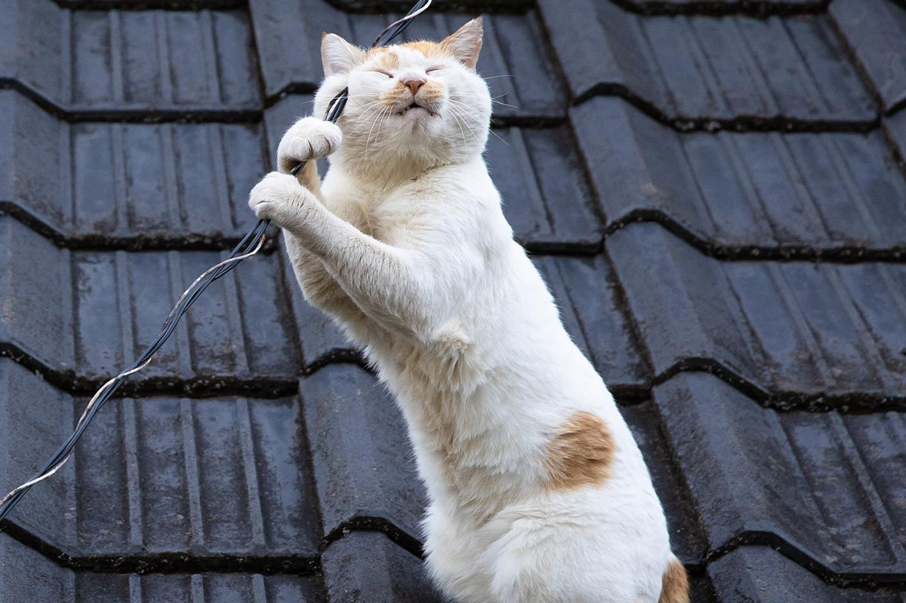

History
Once upon a time, in the distant past, cats weren't merely our adorable, fluffy pals; they were fierce and highly respected hunters. Millennia ago, these graceful creatures roamed the landscapes of ancient Egypt, where they wove themselves into the tapestry of human history in a truly legendary manner. The people of Egypt held an immense reverence for the hunting prowess of cats. They regarded them as diligent protectors of crops, ensuring the safety of grain stores by keeping rodent populations in check. To the ancient Egyptians, cats possessed a certain magical quality, a divine connection. In their eyes, these feline marvels had a direct link to the goddess Bastet, the deity of home, fertility, and domesticity. Bastet was often depicted with the head of a lioness or a domestic cat, reinforcing the deep bond between these animals and divine forces. Thus, the people of Egypt not only revered but also protected cats with unwavering devotion. Cats became an indispensable part of Egyptian households, and any harm or loss of a cat was met with severe consequences, often culminating in death. Families mourned the passing of a cat as if they had lost a beloved family member. In fact, the mourning was so profound that some even went to the extent of shaving their eyebrows as a visible sign of their grief. As the pages of history turned, the charm of cats extended far beyond Egypt's borders. They became cherished and embraced in many other cultures, each culture adding its unique interpretation to the feline narrative. The Romans, for instance, introduced cats to Europe, where they continued to serve as highly efficient controllers of pests. However, during the Middle Ages in Europe, cats faced a temporary setback as they were occasionally associated with superstitions and witchcraft. But as time marched forward, cats once again earned their place as beloved companions. In the 19th century, selective breeding gave rise to different cat breeds, each with its distinct characteristics. By the 20th century, cats had become beloved pets all around the world. In the present day, cats reign as stars of the internet, captivating our hearts with an endless stream of amusing videos and memes. They've evolved from being mere protectors of grain to guardians of our affections, bringing joy through their playful antics and making themselves at home in our hearts. This history, full of reverence, intrigue, and humor, is as enchanting as the cats themselves.
Cat Breeds
There are more than 100 different domestic cat breeds in the world.
Here are the top 5 cats in the U.S.
- Exotic Shorthair Cats
- Ragdoll Cats
- British Shorthair
- Persian Cats
- Maine Coon Cats
Cat Images
 
